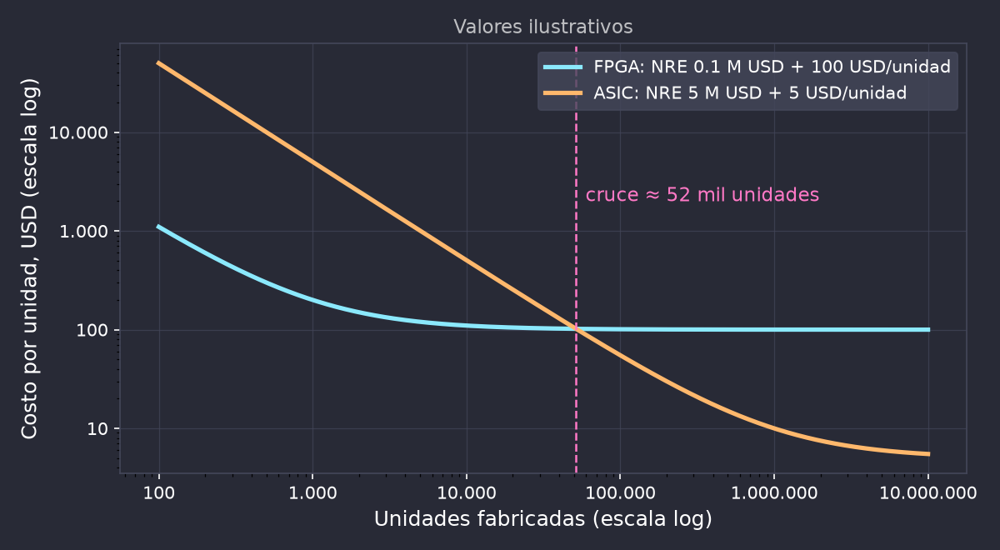
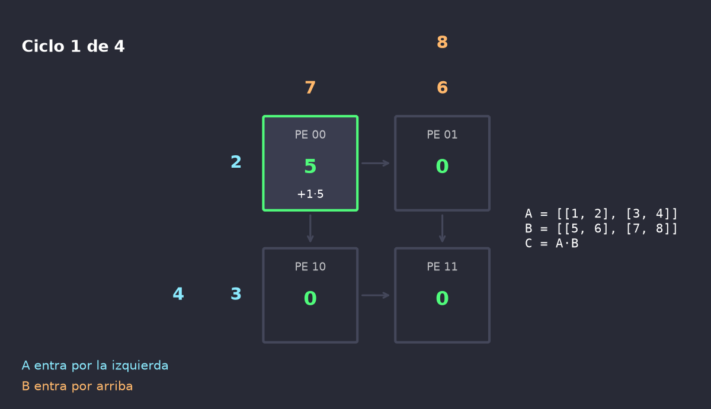
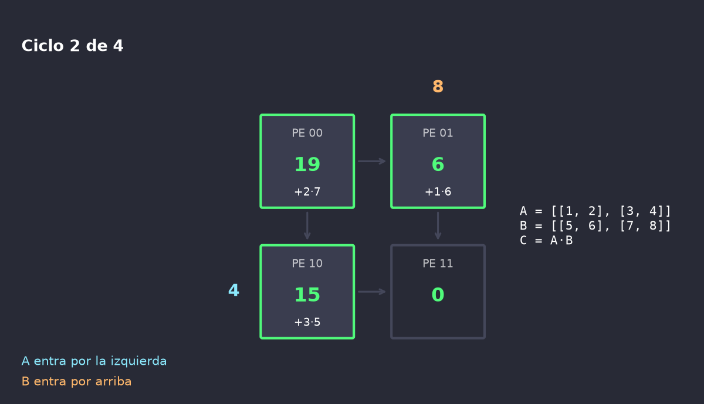
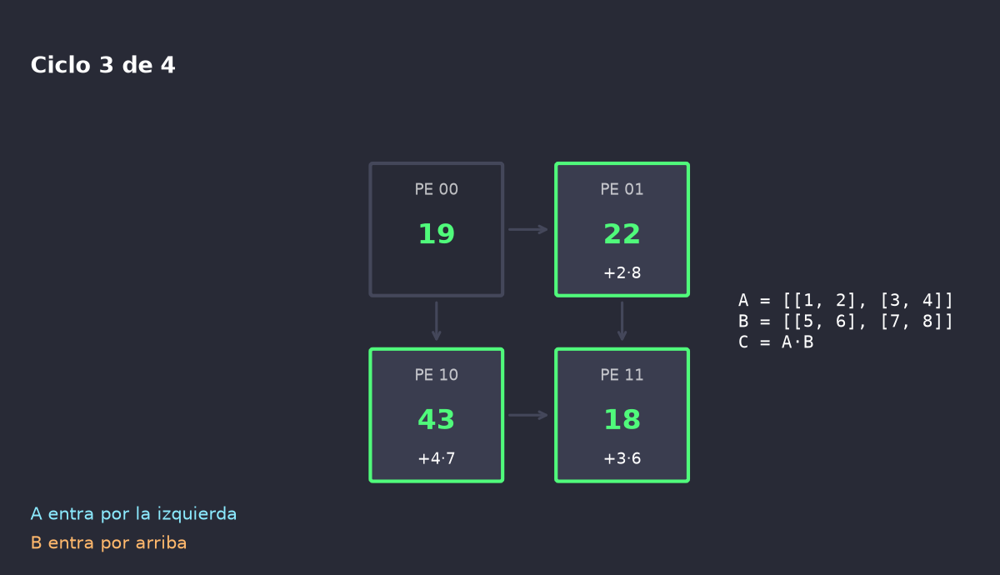
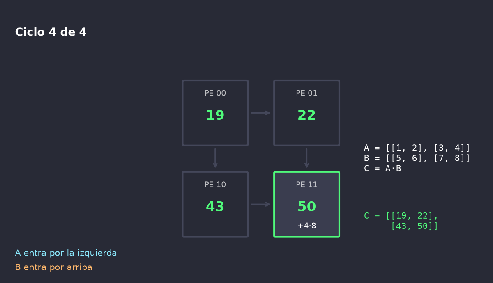

Tema extra: hardware dedicado para redes neuronales
Por qué hardware dedicado: mover datos cuesta más que calcular
FPGA por dentro y cómo se mapea una red
ASIC: flujo, costos y cuándo conviene
Systolic arrays
FPGAs con bloques para IA
Ejemplos: del edge al datacenter
Por qué hardware dedicado
Operación (45 nm)
Energía
Suma INT8
0.03 pJ
Multiplicación INT8
0.2 pJ
Multiplicación FP32
3.7 pJ
Lectura de 32 bits de SRAM (on-chip)
5 pJ
Lectura de 32 bits de DRAM (externa)
640 pJ
Traer un dato de DRAM cuesta ~3000 veces más que multiplicarlo en INT8.
Estrategia de todo acelerador:
muchas MACs en paralelo,
datos guardados cerca de cada MAC,
cada dato leído una vez y reusado muchas.
Fuente: M. Horowitz, ISSCC 2014, tabla
reproducida en Han et al., Deep Compression, ICLR 2016.
FPGA por dentro
LUTs y flip-flops
Tablas de verdad configurables: cualquier función lógica chica. Con ellas se arma
la lógica de control y aritmética de pocos bits (ej. binaria o INT2).
Bloques DSP
Multiplicadores-acumuladores fijos en el silicio. Son los que hacen las MACs de
la red: su cantidad suele limitar el paralelismo.
BRAM / URAM
Bloques de SRAM distribuidos por todo el chip: guardan pesos y activaciones
al lado de los DSPs.
Interconexión programable
Une todo lo anterior. Es lo que da la flexibilidad, y también lo que cuesta
área, energía y frecuencia frente a un ASIC.
Las FPGA SoC (ej. AMD Zynq, Intel Agilex 5) suman procesadores ARM en
el mismo chip: el software corre en el ARM y la red en la lógica.
Redes en FPGA: dos estrategias
Dataflow (desenrollada)
Un bloque de hardware por capa, en pipeline.
Latencia mínima (µs o menos).
El hardware depende de la red: si cambia la red, se vuelve a sintetizar.
Herramientas: hls4ml (toma modelos de QKeras) y FINN (toma modelos de Brevitas).
Overlay (iterativa)
Un procesador de redes genérico sintetizado una vez.
La red se compila a instrucciones para ese procesador.
Cambiar de red no requiere volver a sintetizar.
Ejemplo: la DPU de AMD Vitis AI.
Es el mismo compromiso de la sección 5
(iterativa vs. desenrollada), aplicado a una red entera.
Máxima eficiencia: solo el hardware necesario, sin interconexión programable.
Costo por unidad muy bajo a gran volumen.
Puede integrar memoria, sensores y radio en el mismo chip.
En contra
Costo inicial (NRE) alto: desde cientos de USD en nodos viejos con chips compartidos (ej. Tiny Tapeout) hasta cientos de millones en nodos de punta.
Meses o años de desarrollo.
Un error de diseño se paga con otra fabricación.
Lo que no se previó (un tipo de capa nuevo) no se puede agregar.
FPGA vs. ASIC
FPGA
ASIC
Costo inicial (NRE)
Bajo (placa y herramientas)
Alto a muy alto
Costo por unidad
Alto
Bajo a gran volumen
Tiempo de desarrollo
Semanas a meses
Meses a años
Cambiar el diseño
Reconfigurar (incluso en campo)
Fabricar de nuevo
Eficiencia (energía, área, frecuencia)
Buena
La mejor
Cuándo conviene
Prototipos, bajo volumen, latencia crítica, red que cambia
Alto volumen, red estable, energía crítica
Flujo típico: se prototipa en FPGA y, si el
volumen lo justifica, se pasa a ASIC.
El cruce por volumen

costo por unidad = NRE / unidades + costo de fabricar una
Systolic arrays: la idea
Una grilla de elementos de procesamiento (PE), cada uno con una MAC y unos registros.
Cada PE solo habla con sus vecinos: recibe datos, opera y los pasa al siguiente en el
próximo ciclo.
Los datos entran por los bordes y "laten" a través de la grilla, como la sangre
bombeada por el corazón (de ahí sistólico).
Cada valor se lee una vez de memoria y se reusa en toda una fila o columna de PEs.
Calza justo con la multiplicación de matrices, que es casi todo el cómputo de una red: densas
directamente, y convoluciones reescritas como matrices (im2col).
H. T. Kung y C. Leiserson, 1978; H. T. Kung, Why
systolic architectures?, IEEE Computer, 1982.
Systolic array: paso a paso




Cada PE acumula un elemento de C. Las entradas entran escalonadas
para que cada par llegue al PE correcto en el ciclo correcto.
¿Qué se queda quieto en cada PE?
Weight-stationary
Los pesos se cargan una vez en los PEs; fluyen activaciones y sumas
parciales.
Ej.: TPU de Google.
Output-stationary
Cada PE acumula una salida; fluyen pesos y activaciones.
Ej.: el de la diapo anterior.
Row-stationary
Mezcla pensada para convoluciones: cada PE procesa una fila del filtro
contra una fila de la imagen.
Ej.: Eyeriss (MIT).
El dataflow se elige según qué dato se
reusa más en la red: pesos, activaciones o sumas parciales.
FPGAs con bloques para IA
Familia
Bloque
Qué es
AMD Versal (AI Core, AI Edge)
AI Engines
Grilla 2D de procesadores vectoriales (VLIW/SIMD) con memoria local, conectados
a sus vecinos. AIE-ML: 256 MACs INT8 por ciclo y por tile.
Intel/Altera Agilex 5
AI Tensor Block
Modo del bloque DSP con 20 multiplicadores INT8 (dos productos escalares de 10
elementos), encadenables en cascada.
Achronix Speedster7t
MLP (Machine Learning Processor)
Hasta 32 multiplicadores INT4 (16 INT8) con árbol de sumas y acumulador, con
BRAM acoplada. Soporta block floating point.
No son systolic arrays clásicos, pero
usan la misma receta: muchas MACs de pocos bits, memoria local y datos que pasan de vecino a vecino.
Ejemplos: ASICs para IA en el edge
Chip
Qué es
Escala
ESP32-S3 (la de la demo)
Sin acelerador: instrucciones vectoriales (SIMD) en la CPU
Hasta 16 MACs INT8 por instrucción
Arm Ethos-U55
microNPU que se acopla a un Cortex-M
32 a 256 MACs por ciclo
STM32N6
Microcontrolador con NPU propia (Neural-ART)
288 MACs por ciclo, 600 GOPS
Google Edge TPU (Coral)
Coprocesador por USB o PCIe
4 TOPS en ~2 W
Ejemplos: ASICs para IA en el datacenter
Google TPU (desde 2015): el primero fue un systolic
array de 256×256 MACs INT8 (65 536 MACs por ciclo), weight-stationary, solo para inferencia.
AWS Inferentia y Trainium: chips propios de Amazon
para inferencia y entrenamiento.
Meta MTIA: acelerador propio para los modelos de
recomendación y ranking de Meta.
OpenAI Jalapeño (2026): primer chip propio de OpenAI, diseñado con
Broadcom. ASIC de inferencia para LLMs, de uso interno, con memoria HBM al lado del chip.
La tendencia: quien corre IA a escala suficiente diseña su
propio ASIC, porque el volumen paga el NRE (el cruce por volumen, a escala datacenter).
Resumen: aceleradores en FPGA y ASIC
Mover datos cuesta mucho más que calcular: los aceleradores ganan por reuso y
memoria local, no solo por tener más MACs.
FPGA: reconfigurable, NRE bajo; la red se mapea como dataflow (una capa, un bloque) u overlay
(un procesador de redes).
ASIC: máxima eficiencia, NRE alto; conviene con volumen alto y red estable.
Systolic arrays: grilla de MACs donde los datos pasan de vecino a vecino; el dataflow decide
qué dato se queda quieto.
Las FPGAs nuevas suman bloques fijos para IA: un punto intermedio entre FPGA y ASIC.
Del microcontrolador al datacenter, la receta es la misma, y la compresión (sobre todo la cuantización) es lo que
permite aprovecharla.